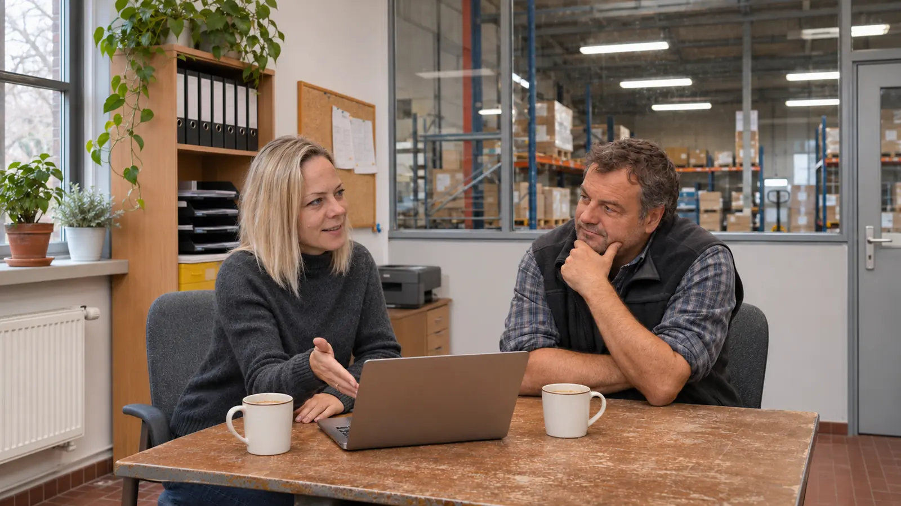
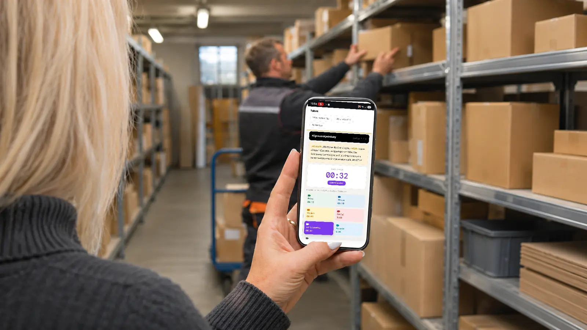
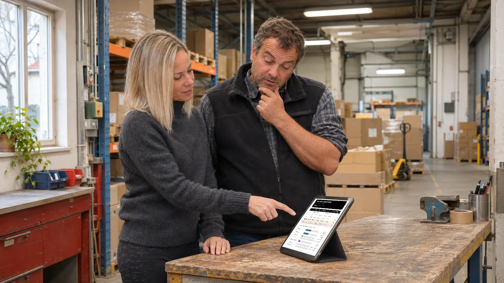
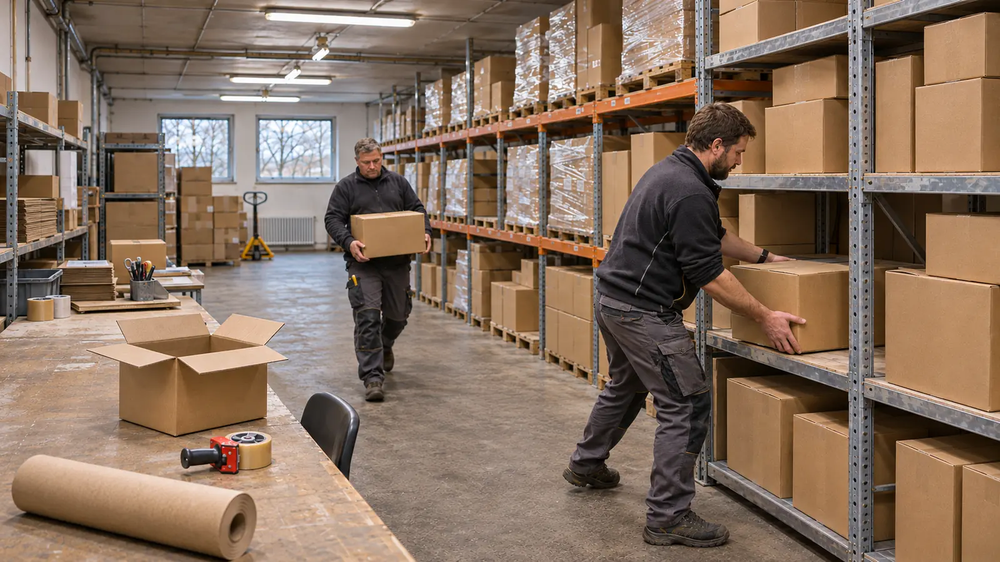
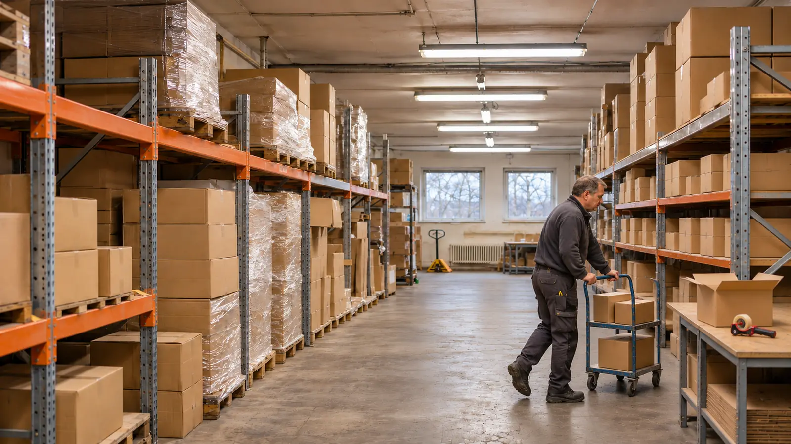
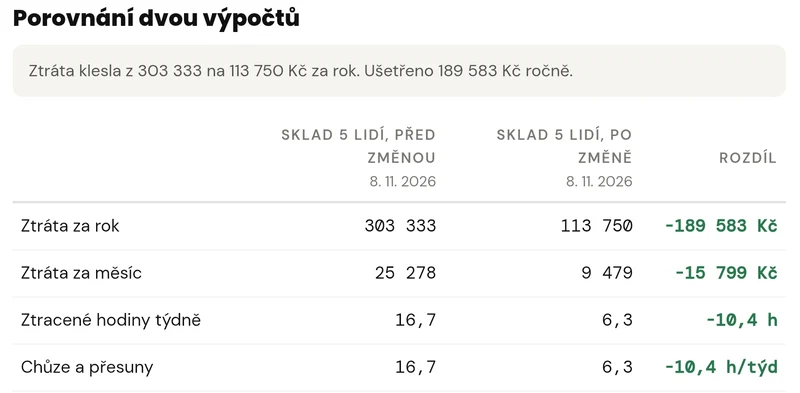
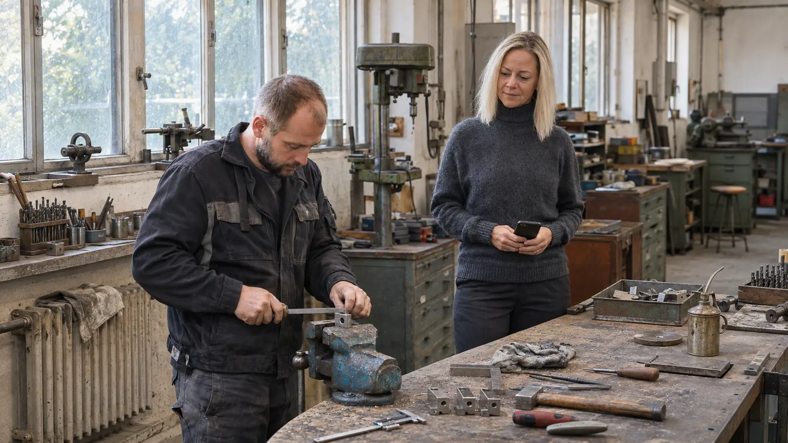
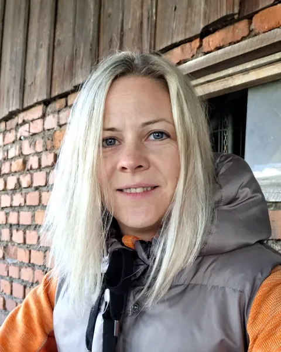

Krok 1
Úvodní schůzka
Sedneme si na 30 až 45 minut. Do 80 km od Vrchlabí přijedu za vámi, dál to zvládneme online. Vybereme jeden problém, který vás opakovaně zdržuje, dohodneme postup a krátce vás zaškolím.
Lidi chodí pro věci, hledají, čekají a opravují chyby, které se pořád vracejí. V žádném výkazu to nevidíte, a tak se to těžko řeší.
Během tříměsíčního pilotu se zaměříme na jeden problém, který vás opakovaně zdržuje. Pomůžu vám vybrat měření, vyhodnotit příčiny a ověřit přínos změny. Získáte tři měsíce spolupráce a celkem půl roku Tokvy Pro zdarma.
Vyberu tři firmy, pro které bude spolupráce nejpřínosnější.

Sedneme si na 30 až 45 minut. Do 80 km od Vrchlabí přijedu za vámi, dál to zvládneme online. Vybereme jeden problém, který vás opakovaně zdržuje, dohodneme postup a krátce vás zaškolím.

Měříte práci tak, jak se dělá každý den. Na mobilu ťuknete na to, co se zrovna děje: práce, přesun, hledání, čekání. Čas se počítá sám. Když jeden cyklus trvá kolem 2 minut, je změřeno do 10 minut.

Hned po měření vidíte, kolik času je práce a kolik mizí v chození, čekání nebo hledání. Porovnáme to s tím, jak jste to odhadovali předem. Často to dopadne jinak.

Hledáme pravděpodobnou příčinu, ne viníka. Tohle většinou není problém lidí, ale postupu. Vybereme první konkrétní krok, který má podle měření největší smysl, a zapíšeme, kdo ho udělá a do kdy.

Po změně změříte totéž znovu. Před a po vedle sebe ukáže, co se zlepšilo a co ještě potřebuje pozornost. Když první změna nezabere, hledáme dál.


Na konci pilotu společně vyhodnotíme, co to přineslo. Odnesete si postup, který pak zvládnete sami u dalších problémů, ve skladu i ve výrobě. Tokvu Pro můžete používat ještě další tři měsíce zdarma.
Fotografie jsou ilustrační. Obrazovky na nich jsou ze skutečné Tokvy.
Tři příklady z mých provozů, změřené před změnou i po ní.

Skladnice Andula. Šest nejčastěji vychystávaných položek šlo blíž k výdeji, bez investice.
Noční směna ztrácela hodiny hledáním. Po změnách v postupu odcházela o 3 hodiny dřív, s ní i řidiči a fakturantky.
Nebyla to jedna změna, ale víc najednou: vychystávání po úsecích, dost zboží v regálech a lepší trasa.
Stejná práce, stejní lidé, za 4 roky o 30 % méně hodin. Zmizely přesčasy, šly přidat odměny.
Každý provoz je jiný a stejné číslo vám slíbit nemůžu. Kolik se dá ušetřit u vás, ukáže až vaše měření.
Moje čísla jsou z mých provozů. Spočítejte si to s vašimi.
Je to odhad z čísel, která zadáte, ne slib úspory. Počítáme s 21 pracovními dny v měsíci. Kolik to u vás je doopravdy, ukáže měření v pilotu přímo při běžné práci.
Doporučení na papíře. Často skončí v šuplíku.
Sklad čísel. Neřekne, kde se ztrácí čas.
Měříte v provozu, změníte jednu věc a změříte znovu. Hned vidíte, jestli to zabralo.
Ne. Pilot je zdarma, protože Tokvu ověřuju v dalších provozech. Postup nový není: stojí na 16 letech praxe a dalších 3 skladech, kam mě posílal ředitel. A měření před a po ukáže černé na bílém, jestli to pomohlo.
Řeknete mi to na rovinu. Nic neplatíte a z měření už víte, kde vám utíká čas. Stálo vás to 30 až 45 minut schůzky a vlastní měření.
Kolik času vás pilot bude stát. Měření i změny děláte při běžné práci, provoz nezastavujete.
Do 80 km od Vrchlabí osobně u vás, dál online. Vybereme problém a uděláme spolu první měření.
Na začátku, po prvních týdnech a na konci pilotu.
Vychystání jedné objednávky trvá kolem 2 minut. Někdo z vás ho změří Měřičem plýtvání na mobilu přímo při běžné práci, bez zastavení provozu. Měří vedoucí nebo kdokoli z provozu. Delší proces znamená delší měření, vždy je to jen čas samotné práce.
Změřit, změnit jednu věc a změřit totéž znovu se dá zvládnout i za 1 až 3 týdny.
Jestli se nový stav udrží, se ukáže až s odstupem času. Proto pilot trvá tři měsíce a já jsem po celou dobu průběžně k dispozici.
Krátce spolu projdeme, co se změnilo a co ještě potřebuje pozornost.
Ne. Kdo umí ťuknout na mobil, zvládne Měřič plýtvání. Nemusíte znát Lean, Kaizen ani Excel a nic se neinstaluje. Měření si spolu vyzkoušíme hned na úvodní schůzce.
Na konci spolu vyhodnotíme, co se změnilo a co ještě potřebuje pozornost. Tokvu Pro pak můžete používat ještě další tři měsíce zdarma. Nic se samo neprodlužuje: týden před koncem vám přijde e-mail, jestli chcete pokračovat.
Pilot i šest měsíců Tokvy Pro jsou zdarma. Kdo bude chtít pokračovat, dostane Tokvu Pro za zakladatelskou cenu, podle varianty od 499 Kč měsíčně (Varianty a ceny). Nástroje zdarma můžete používat dál i bez předplatného.
Vaše data vidíte vy a lidé, které do Tokvy pozvete. Během pilotu do nich nahlížím i já, abych vám mohla radit. Ven nic nejde: do reference jen text, který vám dám předem ke schválení, a citlivá čísla nezveřejním.
Klikněte na Chci se přihlásit. Kdo má účet v Tokvě, je přihlášený jedním klikem, ostatní vyplní e-mail a název firmy, telefon je nepovinný. Na e-mail přijde potvrzení. Do 2 pracovních dnů se vám ozvu a domluvíme úvodní schůzku. Pilot je omezený na 3 firmy, vybírám z přihlášených.
Využijte to: plnou Tokvu Pro na půl roku zdarma a moji pomoc s vaším problémem od měření po ověření změny. Přihláška zabere minutu. Do 2 pracovních dnů se vám ozvu a domluvíme úvodní schůzku. Do 14 dnů po ní vám dám vědět, jestli jste v pilotu.